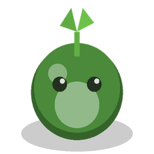
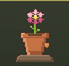
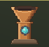
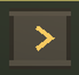
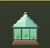
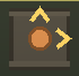
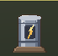
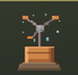
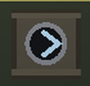
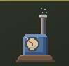

Every level is a riddle. A small stock of pieces, a withered clearing. A piece you place stays where you put it. The pieces you have left are your stars
Miss, and one tap restarts the level, instantly and for free.
Trailer
Fifty seconds of quiet turning green
Trailer music: "Wholesome" by Kevin MacLeod (incompetech.com), CC BY 4.0.
How it plays
Read, place, watch it bloom
No hand painting, no undo. Each level hands you a few machines and a grey clearing; the whole game is deciding where they go.
Read the land
Crystals hold the sap. Rocks and ponds shape the route. Before you commit, the reach of a machine glows on the tiles it would bloom.
Place for good
Extractor on a crystal, belts across the dust, a bloomer at the end of the line. Sprouts ride the belts and the tiles turn green where your factory succeeds.

Keep your pieces
Three stars for a lean layout, two with a spare, one when the stock runs dry. Out of pieces with land still grey? Restart, free, in one tap.
Nine machines
Small parts, long chains
They join the toolbox one level at a time across the campaign, each with its own reach and its own trick.

ExtractorOn a crystal: draws sap.
BeltCarries the sprouts.
GreenhouseBlooms a wide zone.
SplitterTwo outputs.
DynamoSpeeds nearby belts.
SprinklerA whole area at once.
TunnelUnder the rocks.
PumpOn water: boosts blooming.Screenshots
Nine biomes, one island at a time


{kind=link}
{kind=link}
A living island
The world answers your factory
- Bloombursts to gather into a nectar basket, and a merchant who sells garden decorations for it.
- Machines to overcharge at the right moment, falling sap stars, sleepy brambles to brush away, buried chests, a golden hour.
- Ponds to fish while the belts hum, and a fish and flower collection that grows across the campaign.
- Challenge cards at the start of a level: one optional rule for a few extra belts, or skip for free.
- A sanctuary that reblooms with your progress, a daily challenge with records, a free garden with a photo mode.
Nine biomes
Thirty-one handmade levels, then endless generated islands in worlds of twenty-five, every one of them solvable. Nine level types change the rule along the way: fixed workshops, mazes, fishing tides, wasp defense, tea gardens, deliveries, exact-stock connection puzzles.
En français
Le monde s'est éteint
Récolte la sève, assemble de petites machines et laisse ton usine faire refleurir la terre, case après case. Chaque niveau est un petit casse-tête d'usine : un stock de pièces, une clairière fanée, et une pièce posée reste où tu l'as mise. Les pièces qu'il te reste sont tes étoiles ; rater, c'est recommencer d'un geste, gratuitement.
Neuf machines, neuf biomes, neuf types de niveaux, des cartes-défis à choisir en début de partie, une campagne faite main puis des îles à l'infini, un défi du jour, un jardin libre. La récompense, c'est de voir le monde reverdir. Le jeu est entièrement traduit en français.
Where to play
Three doors, one island
PC
In preparationSteam and itch.io. The Steam page and its wishlist button will appear here as soon as they are live.
Android
In preparationGoogle Play, with full touch controls: tap a machine, tap a tile.
Browser
In preparationWeb portals, the same game in a tab.